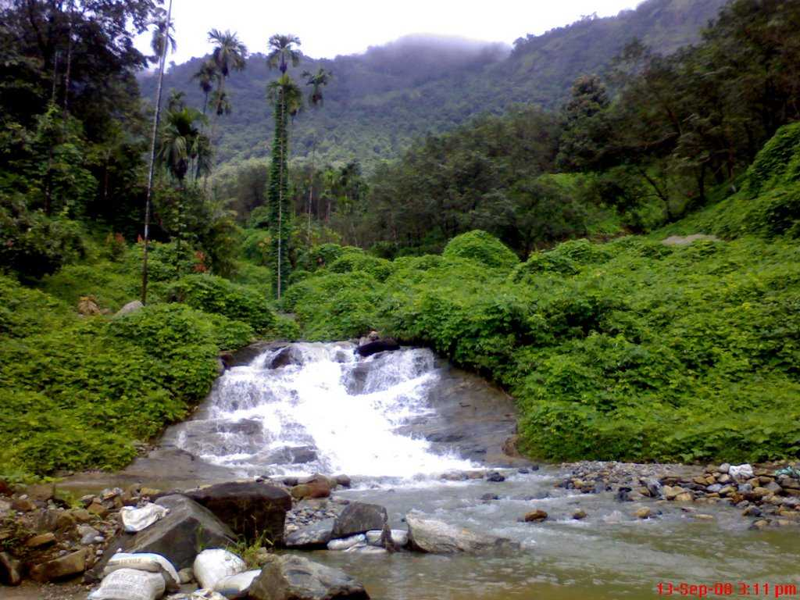

BackWaters of Kozhikode
Natural Marvel

Thusharagiri Waterfalls

Thikkoti Light House

Beypore

Being a part of the most beautiful state in India, Kozhikode has been ranked the second best city in India to reside in. Also known as Calicut, this beautiful city boasts of beautiful beaches, parks, temples, churches, sanctuaries, hillocks, museums, wildlife, sculptures, rivers and lots more. It is the prominent trade and commerce center in Kerala. Vasco Da Gama first set foot here in 1498 after which it became one of the most important ports in the Malabar region for the trade of spices, silk and other goods between European countries and India. The nature of land in Kozhikode is marshy. That is the reason why the world also knows Kozhikode as Chullikkad, which means a ‘shrubby jungle’. The friendly nature of the people of Kozhikode, along with their love for traditional values is heart touching.
Erstwhile Malabar District of British India became a part of the newly formed Kerala on November 1 1956 and a new revenue district named Kozhikode was formed on January 1, 1957. Kozhikode is known to the world as the Center of Malabar, the land of spices and festivals. It attracts traders from all over the globe with its magnificent spices and other commodities. Kozhikode attained a position of pre-eminence in the trade of pepper and other spices since 13th century which made it an ‘Indian Emporium’ of International trade. From time immemorial, the city has been attracting travelers. Its charming physical features and the prosperity is what makes it stand out way above any other city.
The economy of Kozhikode mainly depends on agriculture and fisheries but it is not just limited to them. The timber industry is very powerful in Kozhikode and it is also the main center for the export of tea, coffee and coconuts.
Kozhikode is well known as the ‘city of spices’ and the ‘city of sculptures’. The visit to Kozhikode would be incomplete if you do not go to the local markets of the city to buy spices like black pepper and cardamom. It is not just the spices and the sculptures that make Kozhikode what it is today. The historical significance and the modern living amenities make Kozhikode a famous tourist destination.
It is a historical town with a hoary past. For more than 500 years, it has been in trade with the Arabs, the Jews and the Chinese by trading spices like black pepper and cardamom. The history of Kozhikode district as an administrative unit begins from January 1957. Western powers have made the political history of Kozhikode be full of conspiracies and treacherous. As Kozhikode offered full freedom and security, the Arabs and Chinese merchants preferred it to all the other ports. t was the capital of Malabar during the time of Zamorins, who ruled the region before the British took over. There is also a legend about the last Chera King, Cheraman Perumal. According to that legend, Cherumal divided the kingdom into partitions and left it over to his feudatories. After his disappearance in a mysterious way, the governors of those partitioned lands gained Independence and proclaimed those lands as gifts from Cheraman.
Natural Marvel